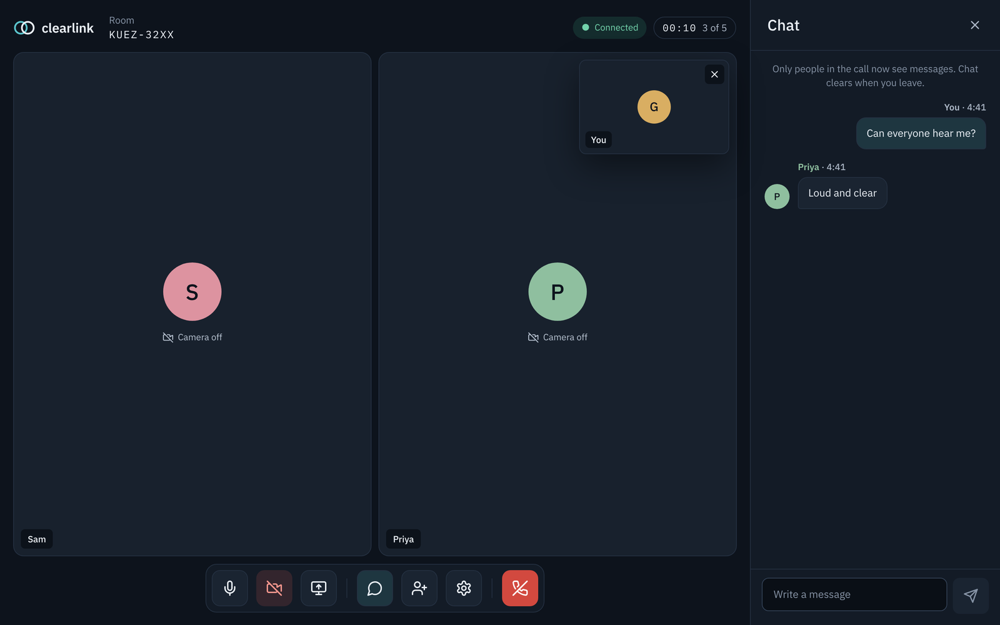

I built the full pipeline: Python processing of OpenStreetMap and City of Melbourne data, a SUMO traffic simulation, and a WebGL viewer in React, TypeScript, deck.gl and MapLibre.
The simulation was also calibrated against real morning-peak traffic counts from 45 signalised intersections.
3D bridges and tunnels, vehicle following, a seekable timeline and road-speed overlays.
EXPLORECentral Melbourne
CBD, Southbank and Docklands.
REPLAY15 minutes of traffic
Seekable, with 1–30× playback.
RUN LOCALLYPrepared data included
Runs in the browser; no Python or SUMO required.
Data provenance
Every road and building height is tagged as measured, sourced or estimated.
Rendering
MapLibre and deck.gl share one WebGL context and depth buffer, so buildings correctly occlude traffic. Playback updates vehicle layers without re-rendering React each frame.
Verification
Contract tests keep data consistent across the pipeline, simulation and viewer; geometry diagnostics and Playwright tests cover vehicle paths and playback. 99.7% of recorded vehicle positions fall within the carriageway.
BROWSER VIDEO CALLING
Clearlink.
Account-free video calls that start with a link.

HOW THE CALL CONNECTS
Browser A
⇄DIRECT WEBRTC MEDIA
Browser B
↓ CONNECTION SETUP ↓
Node.js signallingWho is in the room · connection setup · chat
Each participant sends audio and video directly to the others. The server manages the room and passes connection details and chat messages.
I built the React/TypeScript client and a zero-dependency Node.js signalling server. Calls support up to five people, screen sharing and chat, with audio and video sent directly between browsers over WebRTC.
Collision-free negotiation
Deterministic offer ownership and per-peer queues avoid conflicting offers when people join at once.
Device lifecycle
Generation tokens stop streams returned by outdated camera and microphone requests, so capture doesn’t outlive the screen that requested it.
Connection recovery
Failed connections can be retried with an ICE restart, keeping room membership and device settings.
TypeScriptReactWebRTCNode.jsPlaywright
Covered by Node tests and a five-person Playwright call test; also tested across networks, including mobile data.
02 / EXPERIENCEPLACEMENT & INDEPENDENT DEVELOPMENT
HEALTHCARE SOFTWARE
ITConnexion.
Software development placement
October 2024 — January 2025 · Melbourne
Took over an undocumented Laravel/PHP healthcare application and delivered a working wound-tracking product: AI-assisted measurement from photos, wound history, and doctor and patient/admin dashboards.
Delivered the project independently in a largely remote team: a remote mentor, a lead developer in the Melbourne office and offshore developers across Asian time zones, with daily Scrum stand-ups.
Reverse-engineered the codebase and mapped its classes, data and workflows in high- and low-level UML.
Computer-vision integration
Integrated a Python FastAPI service using YOLOv8 segmentation to outline the wound and a coin, card or ruler reference, then calculate width, height and area from user-adjustable outlines.
Clinical workflow
Linked measurements to patient records and wound history, with home photo updates and doctor review of progress.
↳
Tested the image-analysis API in Postman against expected responses, and traced and fixed integration issues between FastAPI and Laravel.
Designed and built a wine marketplace for wineries and customers: winery and admin portals, catalogues and order workflows on a Node.js/Express backend. Rebuilt the backend in Laravel and PostgreSQL, now in demo testing with payments, stock reservation and multi-winery orders.
03 / EDUCATION & SKILLS
Education & skills.
EDUCATION
Bachelor of Computer Science
Deakin University · completed September 2025
Diploma of Computing · Deakin College
PRIOR EXPERIENCE
Table Games Croupier · Crown Melbourne
April 2018 — April 2026 · Eight years
Applied anti-money-laundering (AML) and gaming controls to high-value transactions, reconciled cash and chip transactions each shift, and de-escalated customer disputes as an appointed Player Welfare Officer.